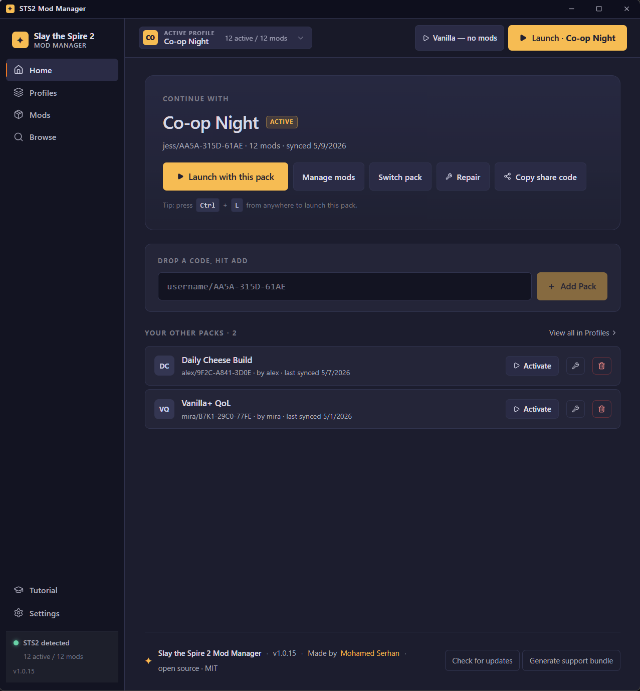
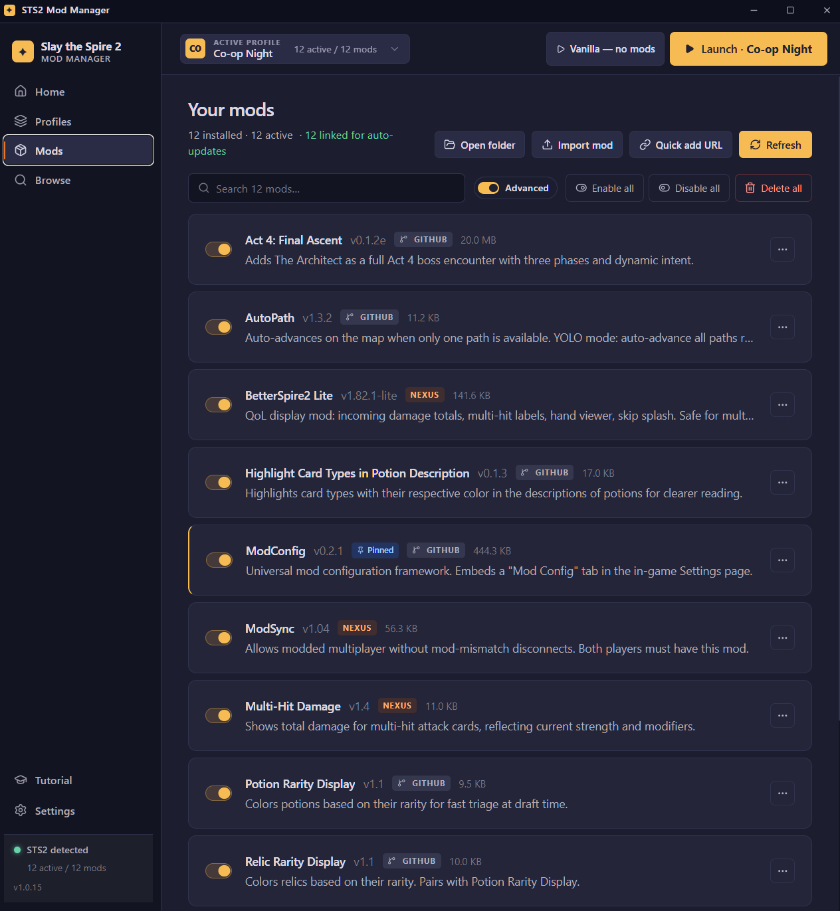
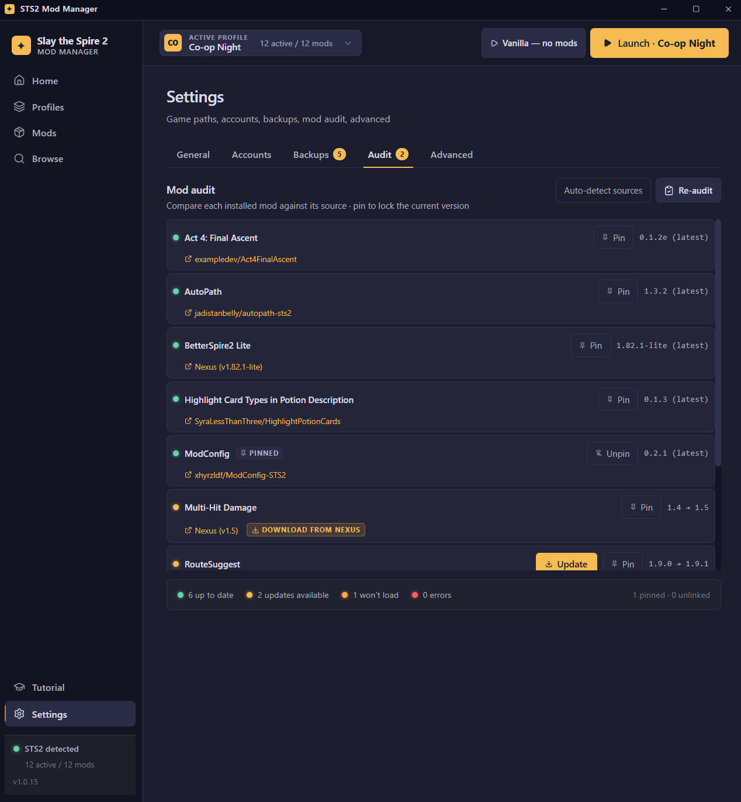
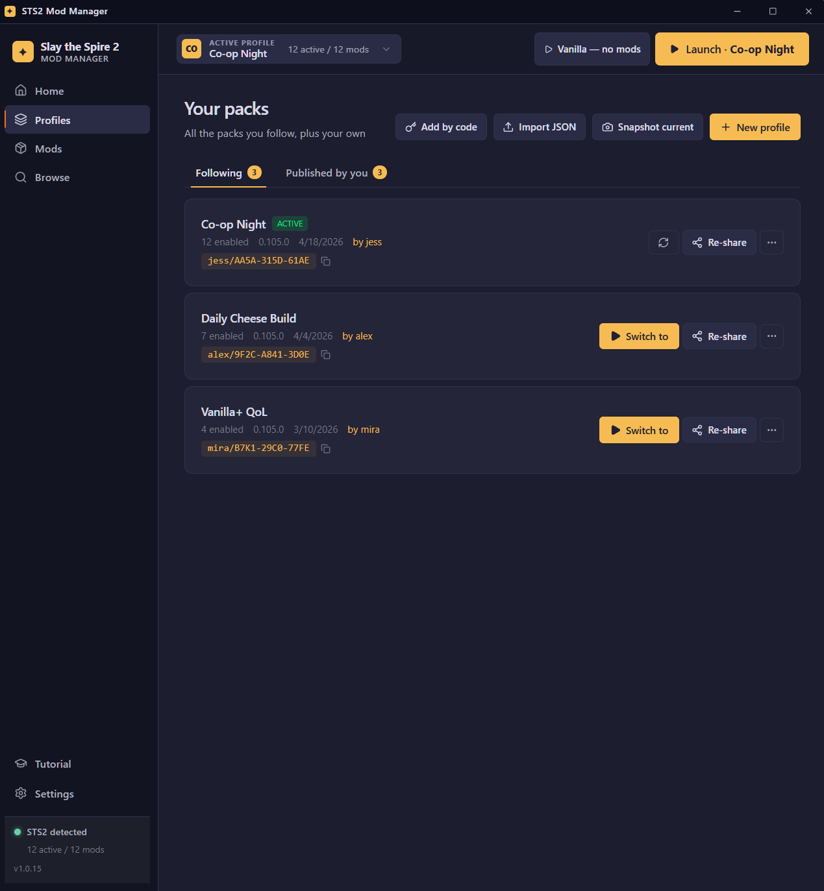
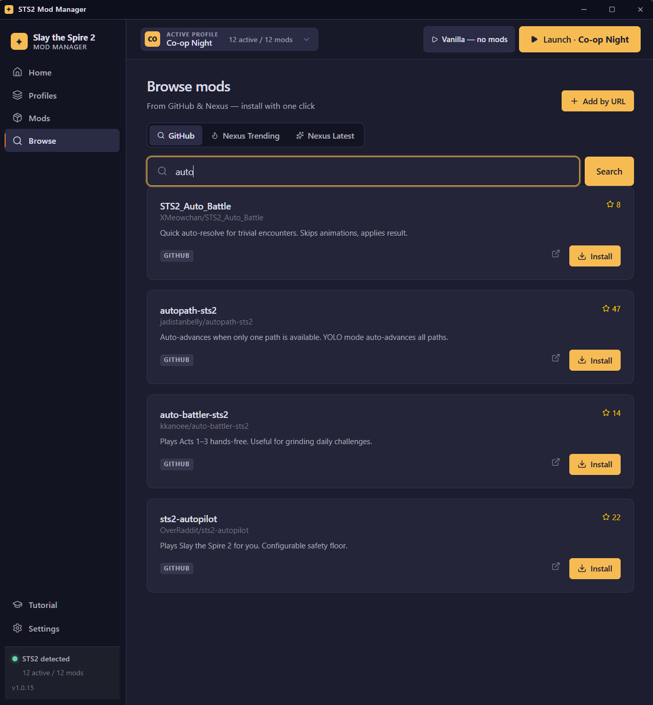

STS2 Mod Manager
Install Slay the Spire 2 mods with one click, manage multiple modpack profiles, and share your setup with friends via short codes. Cross-platform for Windows, macOS, and Linux. No account, no tracking, MIT-licensed.
Download latest release → View on GitHub

Why this one
There are mod managers, and there are mod managers built around the "play exactly what my friend plays" workflow. STS2 Mod Manager is the second kind, and a few choices follow from that.
Modpack share codes
Friend pastes you something like jess/AA5A-315D-61AE and the app downloads every mod from its source (GitHub releases or Nexus), enables the right ones, and marks it active. Re-shares reuse the same code so followers see "update available" instead of having to follow a new code.
Game-version aware Repair
If a mod's latest release needs a newer game build than yours, Repair walks back through the mod's release history and installs the newest version that's actually compatible with your Slay the Spire 2 — instead of installing something the game's loader will silently skip.
Drift detection
When your installed mods diverge from the active profile (you toggled something, an update reshaped a mod), the app flags it with a one-click Repair that re-applies the manifest. No more wondering why a profile feels different than last session.
Pin = version and state
Most managers pin only the version. This one pins both the version and the on/off state, so a modpack update from a curator can't auto-toggle a mod you specifically wanted on or off.
Audit you can act on
Settings → Audit shows every mod with a colored LED for its real state: up to date, update available, won't load on your game, release missing assets, no source linked. Update / Pin / Repair actions live on the row.
No account, no telemetry
Open source, MIT-licensed, ships as a standalone Tauri app. Your mod sources are GitHub releases and (optionally, with a free key) Nexus. Nothing leaves the app except the network calls you'd make yourself.
Manage mods
Toggle, pin, repair, audit. Advanced toggle on each screen unlocks the deeper controls when you want them.


Share & follow modpacks
Share what you play. Subscribe to friends' packs and get an "update available" card when they re-share.


A note on Nexus. Free-tier only.
The app opens the mod's Files page in your browser; you click
Nexus's Slow Download / Manual button (the free one),
wait the few seconds, and the browser drops a zip into
~/Downloads. The app's folder watcher picks it up and
installs automatically. Don't click Nexus's Mod Manager
Download — its nxm:// deep-link isn't wired
through to the install pipeline yet, so nothing happens. Premium
accounts use the same free-tier flow, so paid subscribers don't get
faster downloads here.
Quick start
- Download the installer for your platform (Windows .msi, macOS .dmg, Linux .deb / .rpm / .AppImage).
- Run it. The first-launch wizard auto-detects your Slay the Spire 2 install via Steam.
- Got a code? Paste it on Home and hit Add Pack. The app downloads every mod for you.
- Hit Launch. Auto-backup runs first.
Source & bug reports
- Source code on GitHub — MIT licensed.
- Report a bug — the in-app Home → Generate support bundle button helps.
- All releases — including pre-release builds.